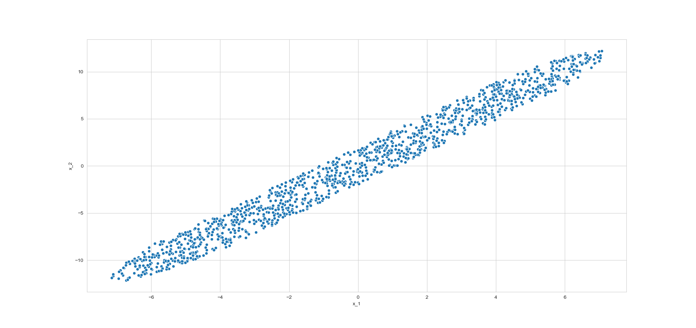

Principal Component Analysis
Get overall idea of PCA, learn how the mathematics behind it works applying the concepts of rotation of axes, eigen value and eigen vectors. Finally code everything from scratch and satisfy yourself seeing our output matches with scikit-learn!
Introduction
Suppose our \(n\) feature vectors \(\vec{x}_1, \ \vec{x}_2, \ \vec{x}_3, \ ...,\ \vec{x}_n\) are 2 dimensional. As, we always prefer to create model with fewer number of variables whenever possible, we want to drop one among the two regressors. Now consider, two cases,
Case 1
 We see that, variance in x_2 is much less than x_1; ie. x_2 remain more or less same even if the
dependent variable \(y\) changes. In simple terms \(y\) does not dependent on x_2 as it depends on x_1.
Here we can even say that, it does not depend at all (with little risk). So, we can safely drop it.
We see that, variance in x_2 is much less than x_1; ie. x_2 remain more or less same even if the
dependent variable \(y\) changes. In simple terms \(y\) does not dependent on x_2 as it depends on x_1.
Here we can even say that, it does not depend at all (with little risk). So, we can safely drop it.
Case 2
Now suppose now scatter plot x_1 vs x_2 looks like this,  Here we cannot say that variance of one variable is much less than the other, there is enough variance in both of the axis. But suppose we are desparate to drop one of the variable. If we consider the red arrow direction in the picture, we see that in this direction variation is much less than the blue arrow direction. This observation is the key to the Principal Component Analysis. If we rotate our axis so that our x_1 axis meets blue arrow and the x_2 axis meets the red arrow, then in the resulting rotated axis we can drop the rotated x_2 axis. Also we can rotate so that we drop the x_1 axis. But we take the approach to drop the later variable (x_2). If we generalise the above concept for multivariate set up, we get, Rotate the original axes so that variance of the first rotated axis > variance of the next rotated axis > ... and so on.
Doing the Mathematics
Suppose \(\vec{x}\) is our p dimensional feature vector with sample variance covariance matrix \(\Sigma\). We want to rotate our original axes, ie. we want a orthogonal matrix \(Q\) (ie. \(Q^TQ = I\)) such that,
\[Q.\vec{x} = \begin{pmatrix} \vec{Q_1} \\ \vec{Q_2} \\ \vec{Q_3} \\ . \\ . \\ . \\ \vec{Q_p} \end{pmatrix}.\vec{x} = \begin{pmatrix} \vec{Q_1}.\vec{x} \\ \vec{Q_2}.\vec{x} \\ \vec{Q_3}.\vec{x} \\ . \\ . \\ . \\ \vec{Q_p}.\vec{x} \end{pmatrix} = \begin{pmatrix} P_1\\ P_2 \\ P_3 \\ . \\ . \\ . \\ P_n \end{pmatrix} = \vec{P}\]
Here \(Q_i\)s are row vectors and \(P_i\)s are scalar.
Now we have to determine a \(Q\) so that in \(P\),
Note: Here sum of variances of \(P_i\)s and sum of variances of the original \(x_i\) are same. As,
\(\Sigma\) is the variance covariance matrix of \(\vec{x}\).
Getting First Axis
Variance of \(P_1\)
We know that \(\Sigma \) is a variance covariance matrix, hence it is positive definite, and we can eigen decompose it. Using this decomposition if we calculate variance of \(P_1\) we will get,
Here,
- \(A^T = \vec{Q}^T_1E = (a_1, a_2, a_3, ..., a_p)\) (note, this is a row vector, \(\vec{Q}_1^T\) is a row, \(E\) is matrix, so \(A\) is row)
- \(D_{\lambda} =\) Diagonal matrix of eigen values \(= diag(\lambda_1, \lambda_2, \lambda_3, ... , \lambda_p)\)
- \(E =\) Orthogonal matrix of eigen vectors \(= (\vec{e}_1, \vec{e}_2, \vec{e}_3, ..., \vec{e}_p)\), where \(e_i\) is the eigen vector corresponding to \(\lambda_i\) and,
Maximum Possible Value of \(var(P_1)\)
Here,
- \(\sum_{i=1}^pa_i^2 = A^T.A = \underbrace{\vec{Q}^T_1.E.E^T\vec{Q}_1 = \vec{Q}^T_1.I.\vec{Q}_1}_{\text{$E$ is orthogonal matrix}} = \vec{Q}^T_1.\vec{Q}_1 = 1\),
- \(hi\), is the index for which \(\lambda\) is maximum.
So, the maximum possible value of \(var(P_1)\) is the highest eigenvalue. So now our aim just narrows down to finding a \(\vec{Q}_1\) for which \(var(\vec{Q}_1.x)\) is \(\lambda_{h_i}\)
Finding \(\vec{Q}_1\)
We remember that \(var(P_1) = \sum_{i=1}^p \lambda_ia_i^2\). Now this quantity will become \(\lambda_{hi}\) if we put 0s in place of all the \(a_i\)s except for \(a_{hi}\) and 1 in place of \(a_{hi}\). In this case \(A\) will look like: \( (0, 0, ..., 1, 0, ...,0)\), where 1 is at \(hi\) index.
Now please note that, \(A^T=\vec{Q}^T_1E\), now if we put \(\vec{Q}_1=\vec{e}_{hi}\), then \(A^T=\vec{e}^T_{hi}E\). Now \(e_i\)s are orthogonal to each other, ie. \(\vec{e}_i^T\vec{e}_j=0\) for all \(i \neq j\). So, in this case \(A\) will become \((0, 0, ..., 1, 0, ...,0)\) which we were trying to get. So, we finally get that
where, \(hi\) is the index for which \(\lambda\) is maximum.
We can calculate the variance of \(e_{hi}^T\vec{x}\) and can see that it is \(\lambda_{hi}\) 👇
Getting the Second Axis
Variance of \(P_2\)
If we calculate variance of \(P_2\) using same decomposition logic we will get,
where,
- \(\lambda_{hi_2}\) is the second highest eigen value and \(hi_2\) is the index of it
- \(\sum_{i=1 \\ i \neq hi}^p \bar{a}_i^2 = \bar{A}^T.\bar{A} = \underbrace{\vec{Q}^T_2.E.E^T\vec{Q}_2 = \vec{Q}_2^T.I.\vec{Q}_2}_{\text{$E$ is orthogonal matrix}} = \vec{Q}_2^T.\vec{Q}_2 = 1\)
- \(h_i\)th element of \(\bar{a}\) ie. \(a_{hi}\) is 0 as \(a_{hi} = \vec{Q}^T_2\vec{e}_{hi} = \vec{Q}^T_2.\vec{Q}_1 = 0\), as \(Q\) is orthogonal matrix so, \(Q_1\) is orthogonal to \(Q_2\).
Maximum Possible Value of \(var(P_2)\)
So, highest possible value is the second highest eigen value.
Finding \(\vec{Q}_2\)
In the same fashion as \(Q_1\) we can find \(Q_2\). If we use the same logics we will find that,
where, \(hi_2\) is the index for which \(\lambda\) is second highest.
We can calculate the variance of \(e_{hi_2}^T\vec{x}\) and can see that it is \(\lambda_{hi_2}\) 👇